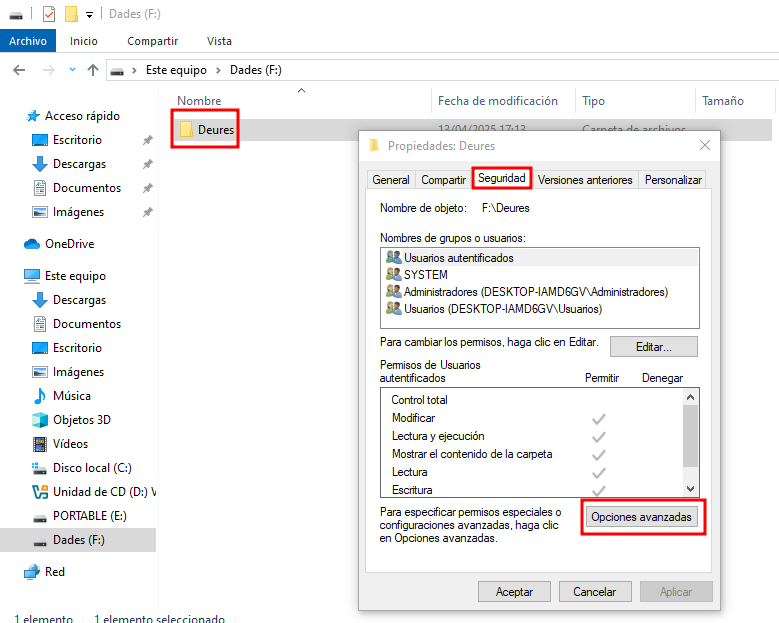
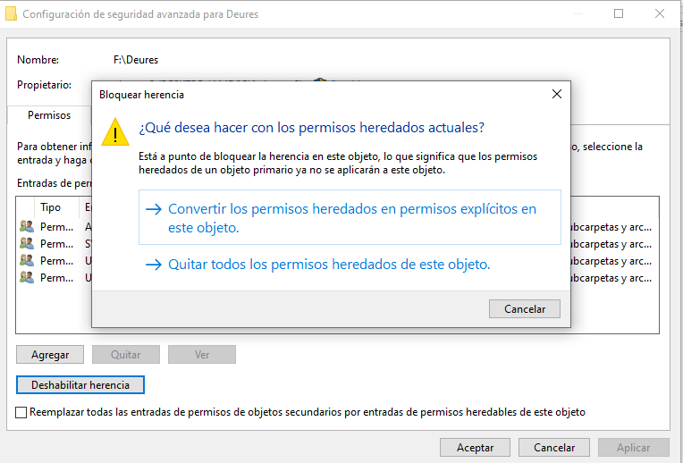
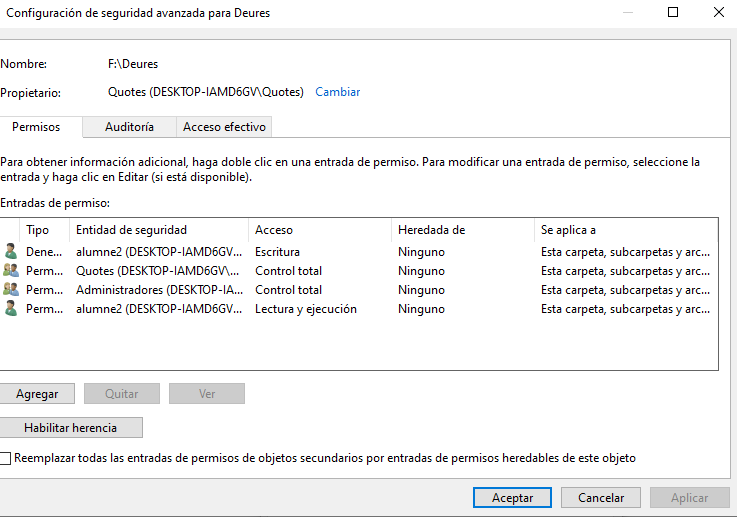
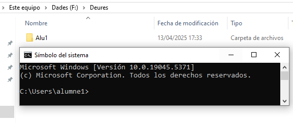
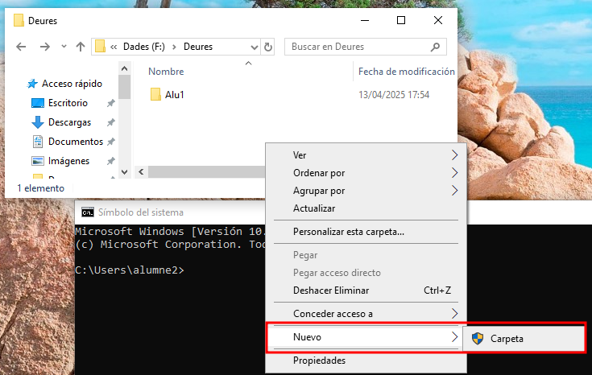
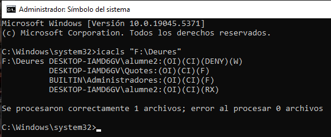

Gestió d'ACLs (llistes de control d'accés) a Windows
Introducció a les ACLs en entorns Windows
Al sistema operatiu Windows, cada fitxer i directori incorpora una ACL (Access Control List), una estructura que defineix quins usuaris o grups tenen permís per interactuar amb el recurs i de quina manera.
Cada element dins d’una ACL rep el nom de ACE (Access Control Entry), i conté informació com:
- L’usuari o grup afectat.
- Els permisos associats (per exemple: lectura, escriptura, execució, control total...).
Aquest sistema és molt més detallat que els permisos bàsics de compartició de carpetes, ja que:
- Es poden establir permisos concrets per a fitxers o directoris individuals.
- Permet combinar permisos per a grups i usuaris específics.
- És possible configurar permisos avançats, com:
- Només lectura
- Només permís per esborrar
- Control total menys modificació de permisos
- A més, aquests permisos poden ser heretats automàticament o assignats manualment.
Exemple: Una carpeta pot tenir permisos diferents per a alumne1 i alumne2, tot i que tots dos formin part del mateix grup.
Cas pràctic: control de permisos a la carpeta “Deures”
Suposem que tenim una carpeta anomenada Deures ubicada a D:\Dades. L’objectiu és gestionar l’accés de manera controlada:
- El grup Quotes tindrà control total.
- L’usuari alumne2, tot i formar part del grup, només tindrà permís de lectura.
Això permet que els membres del grup puguin modificar lliurement la carpeta, mentre que alumne2 només podrà consultar la informació sense alterar-la.
Configuració de permisos bàsics
- Obrim les propietats de la carpeta
D:\Deuresi accedim a la pestanya Seguretat.

- Clic a Avançat → Desactivem la herència, mantenint els permisos existents.

-
Eliminem usuaris genèrics com
UsersoEveryone, si hi són. -
Afegim el grup Quotes i li assignem Control total.
-
Afegim es usuari "alumne2" amb permisos de lectura i restringint la creacio i edicio de dades

Comprovació amb un membre del grup
Iniciem sessió amb alumne1, membre del grup Quotes. Es prova a crear fitxers i carpetes dins D:\Deures.
→ L’usuari pot llegir, escriure, esborrar i gestionar fitxers sense restriccions.

Validació dels permisos aplicats "alumne2"
Ara iniciem sessió com a alumne2 i provem d’editar o crear nous fitxers a la carpeta Deures.
- Si intenta crear una nova carpeta, el sistema demana permisos elevats.
- Si prova de modificar un fitxer existent, apareix un missatge d’accés denegat.

Comprovació amb icacls
Finalment, podem revisar tots els permisos mitjançant:
icacls "D:\Deures"

Aquest comandament mostra totes les entrades ACL, incloent-hi:
- alumne2 amb només lectura
- Quotes amb control total